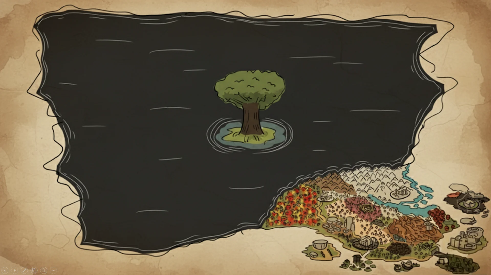
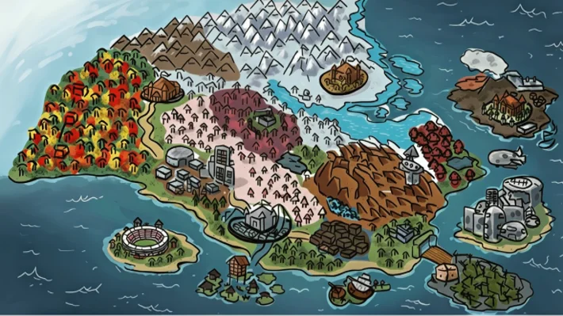
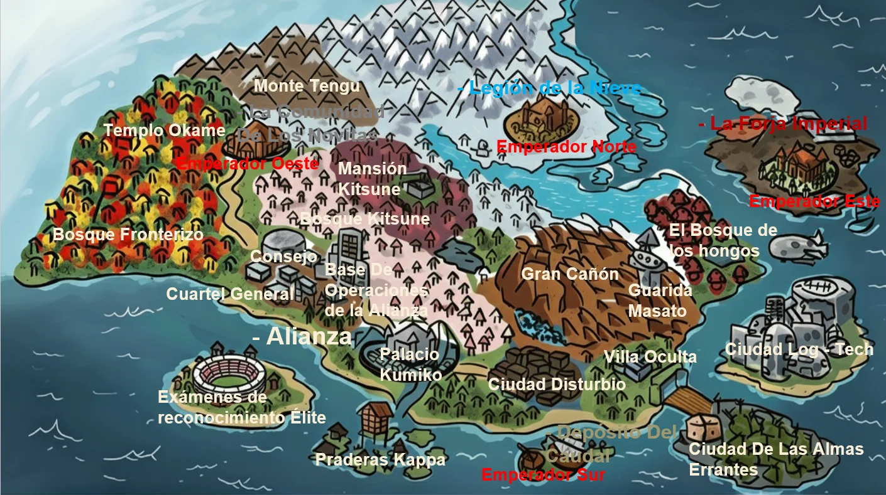
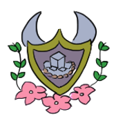
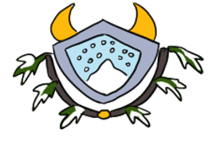
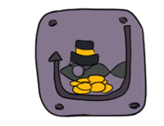

Cartografía del Mundo Aiko
Mapa General del OverWorld

Te encuentras ante el vasto continente de Aiko, un mundo forjado bajo el yugo de antiguos emperadores y templado en el fuego de guerras interminables. En esta tierra de conflictos ancestrales, desde las praderas centrales hasta las indómitas islas volcánicas, cada cicatriz en el mapa guarda un secreto que solo los más valientes se atreverán a descubrir.
País del Flor De Cerezo



Palacio Kumiko
Legión de la Nieve
El deposito del CaudalTierras de la Alianza
Bajo el estandarte de La Alianza, las antiguas facciones en conflicto han depuesto sus armas para consolidar las Regiones Aliadas, un frente unido que lucha por restaurar la paz en un Overworld devastado por la guerra.
Palacio Kumiko
El majestuoso hogar de la Princesita Aiko y su madre. Este castillo no es solo una fortaleza, sino el símbolo de la paz del País del flor de cerezo. Aquí residen los últimos descendientes del linaje Kumiko, protegiendo la sabiduría ancestral de su familia.
Base de Operaciones y Consejo de la Alianza
El centro estratégico donde se reúnen los líderes de las regiones aliadas. Bajo la supervisión de la corona Kumiko, el Comandante Routswell dirige la base como jefe de operaciones, tomando las decisiones tácticas necesarias para mantener a raya el caos y coordinar las defensas de todo el continente.
La Comunidad de los novitas
Ubicada en los alrededores de la capital, es una zona vibrante donde ciudadanos y nuevos aventureros conviven en armonía. Como corazón comercial y social del reino, florece bajo la protección directa de la Alianza y el Palacio. Es aquí donde el Emperador de los Novitas guía a los habitantes, enseñándoles el ancestral arte de canalizar y controlar el aura natural que emana de la tierra del País del flor de cerezo.
Legión de la nieve
Guerreros de honor que custodian las fronteras más frías del Norte. Tras unirse a la Alianza, juraron lealtad a la Princesita Aiko, convirtiéndose en el escudo inquebrantable del reino. Bajo el liderazgo del Emperador Alaric Winterguard, la Legión opera con una determinación feroz; Alaric es un protector implacable que no se detendrá ante nada con tal de asegurar la seguridad de su familia y su pueblo.